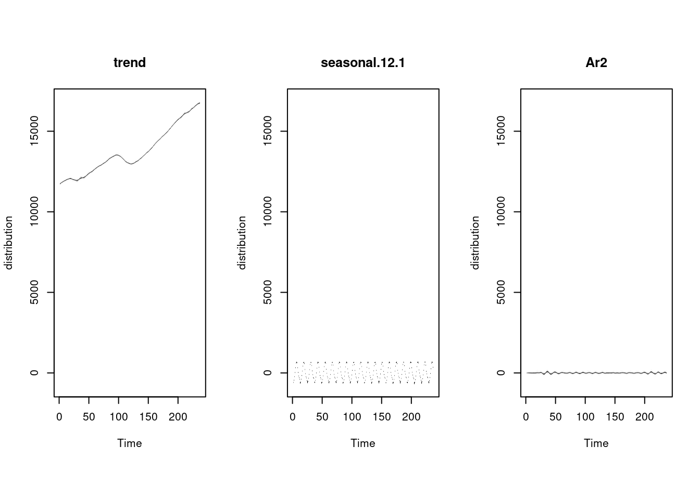
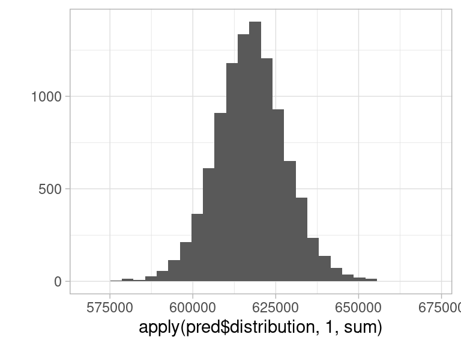
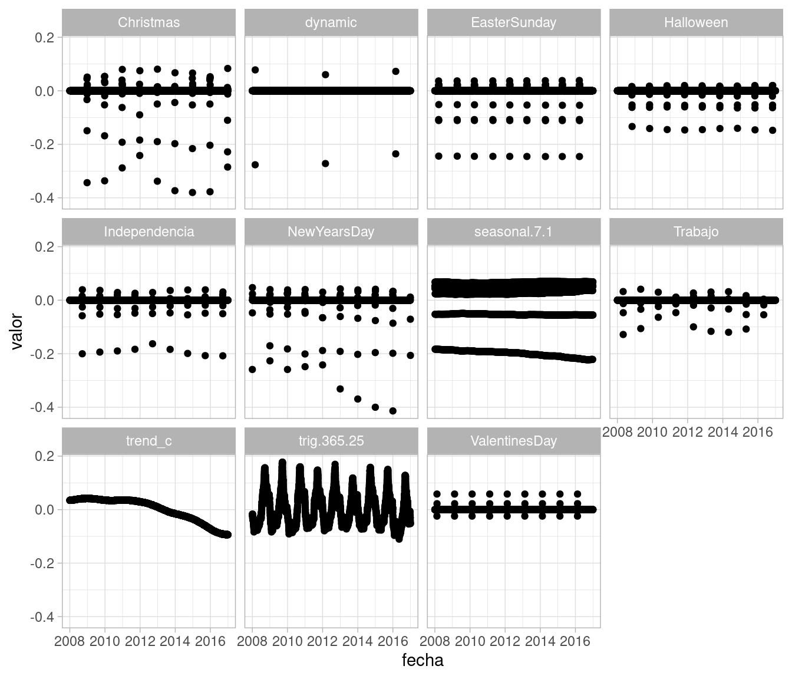
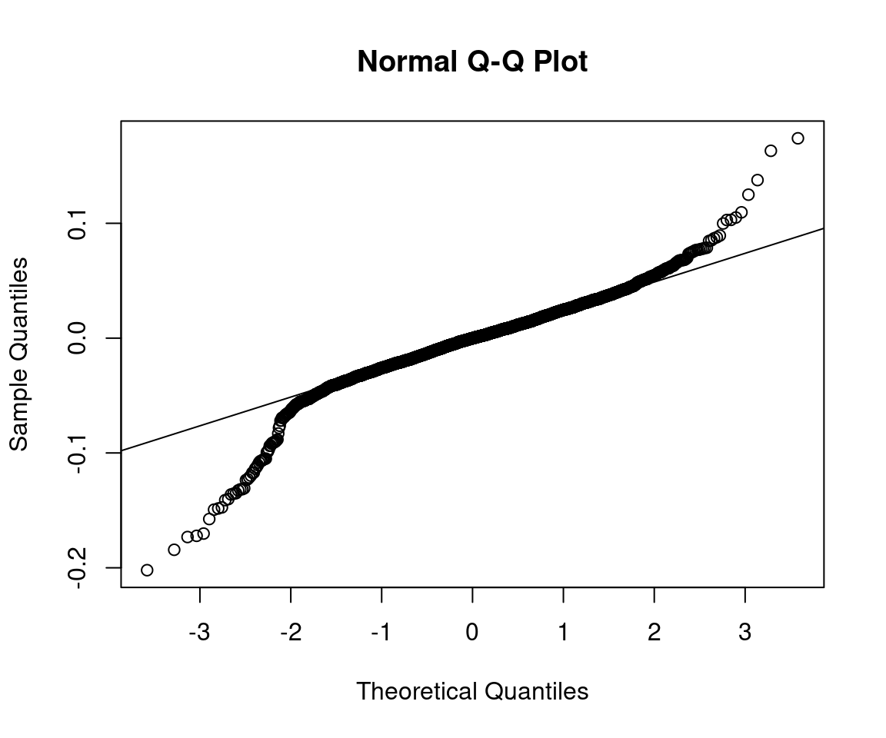
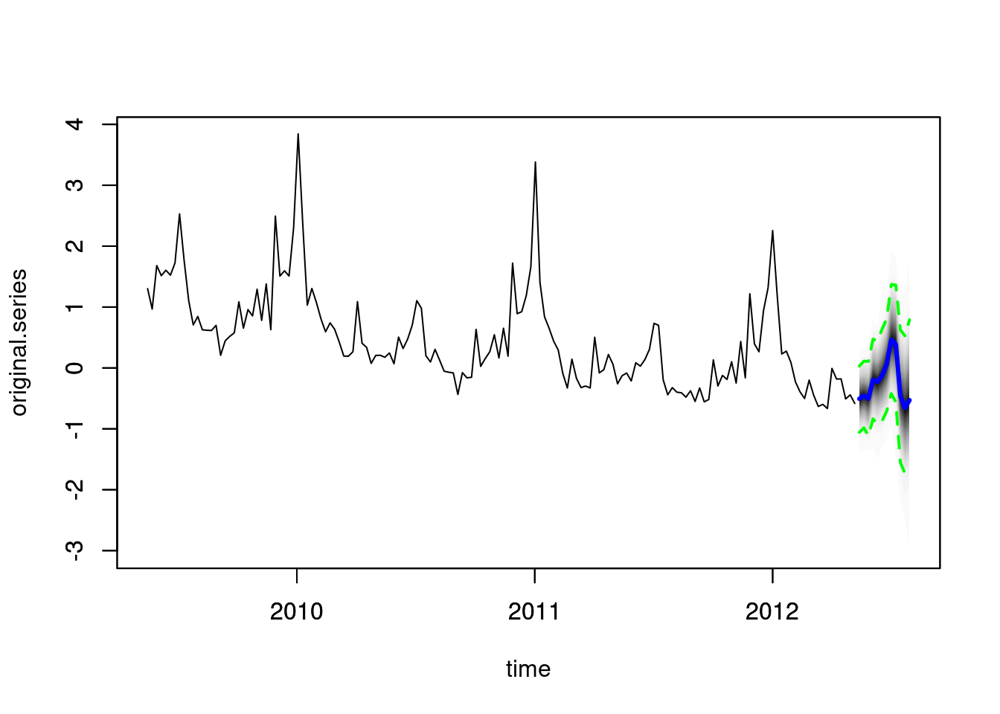
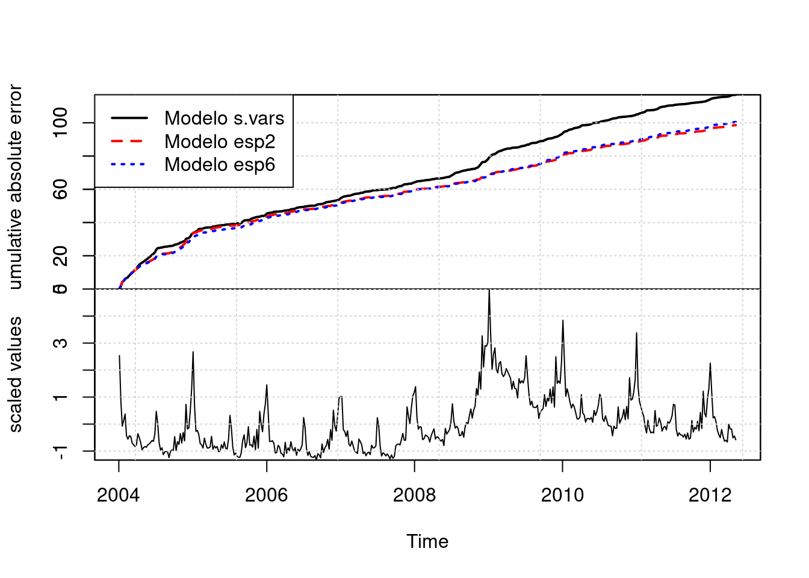
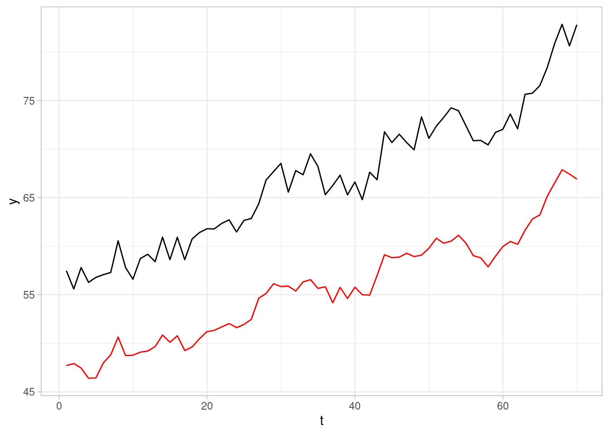
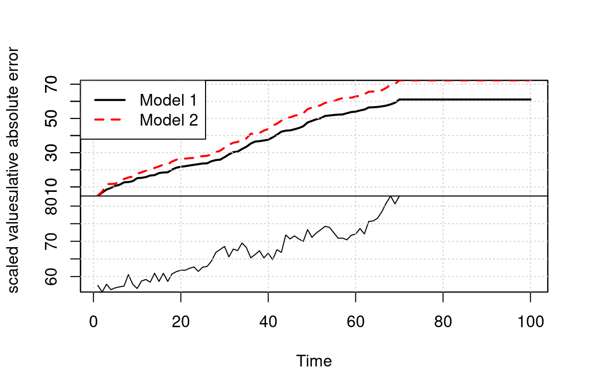
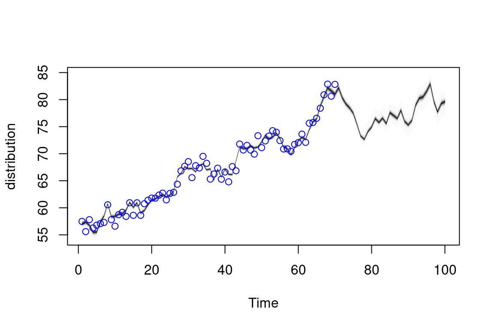
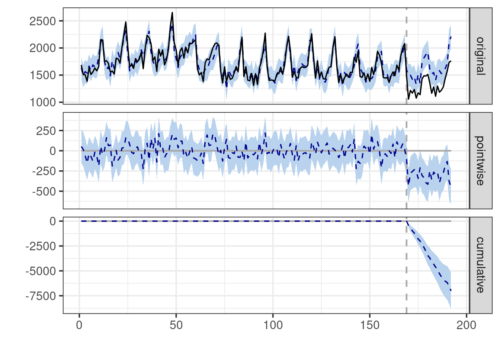

Código
library(tidyverse)
library(kableExtra)
library(DiagrammeR)
library(CausalImpact)
locale <- Sys.setlocale("LC_TIME", "es_ES.UTF-8")
library(lubridate)
library(fpp3)
ggplot2::theme_set(ggplot2::theme_light())library(tidyverse)
library(kableExtra)
library(DiagrammeR)
library(CausalImpact)
locale <- Sys.setlocale("LC_TIME", "es_ES.UTF-8")
library(lubridate)
library(fpp3)
ggplot2::theme_set(ggplot2::theme_light())Consideramos un ejemplo de Hyndman y Athanasopoulos (2014) en la esta sección, donde buscamos hacer pronósticos de empleo en Estados Unidos. Consideramos los datos de entretenimiento y hospitalidad:
ent_hosp_tbl <- filter(us_employment,
Title == "Leisure and Hospitality") |>
filter_index("2000-01" ~ . )
ent_hosp_ts <- ent_hosp_tbl |> as.ts(Employed)
#ent_hosp_ts <- log(ent_hosp_ts)
autoplot(ent_hosp_tbl, Employed)
Intentaremos usar varios modelos, incluso algunos que claramente no son correctos:
library(bsts)
set.seed(998)
#inicial_nivel <- NormalPrior(11000, 1500, initial.value = 11000)
mod_spec_1 <- AddLocalLevel(list(), y = ent_hosp_ts)
mod_spec_2 <- AddLocalLinearTrend(list(), y = ent_hosp_ts)
mod_spec_3 <- AddLocalLevel(list(), y = ent_hosp_ts) |>
AddSeasonal(nseasons = 12, y = ent_hosp_ts)
mod_spec_4 <- AddLocalLinearTrend(list(), y = ent_hosp_ts) |>
AddSeasonal(nseasons = 12, y = ent_hosp_ts)
mod_spec_5 <- AddSemilocalLinearTrend(list(), y = ent_hosp_ts) |>
AddSeasonal(nseasons = 12, y = ent_hosp_ts)
mod_spec_6 <- AddSemilocalLinearTrend(list(), y = ent_hosp_ts) |>
AddSeasonal(nseasons = 12, y = ent_hosp_ts) |>
AddAr(lags = 2, y = ent_hosp_ts)
specs <- list(mod_spec_1, mod_spec_2, mod_spec_3, mod_spec_4, mod_spec_5, mod_spec_6)
ajustes <- map(specs, function(spec){
bsts(ent_hosp_ts, spec, niter = 40000, ping = 10000)
})=-=-=-=-= Iteration 0 Fri May 5 21:53:13 2023 =-=-=-=-=
=-=-=-=-= Iteration 10000 Fri May 5 21:53:25 2023 =-=-=-=-=
=-=-=-=-= Iteration 20000 Fri May 5 21:53:37 2023 =-=-=-=-=
=-=-=-=-= Iteration 30000 Fri May 5 21:53:49 2023 =-=-=-=-=
=-=-=-=-= Iteration 0 Fri May 5 21:54:02 2023 =-=-=-=-=
=-=-=-=-= Iteration 10000 Fri May 5 21:54:17 2023 =-=-=-=-=
=-=-=-=-= Iteration 20000 Fri May 5 21:54:32 2023 =-=-=-=-=
=-=-=-=-= Iteration 30000 Fri May 5 21:54:47 2023 =-=-=-=-=
=-=-=-=-= Iteration 0 Fri May 5 21:55:02 2023 =-=-=-=-=
=-=-=-=-= Iteration 10000 Fri May 5 21:55:37 2023 =-=-=-=-=
=-=-=-=-= Iteration 20000 Fri May 5 21:56:12 2023 =-=-=-=-=
=-=-=-=-= Iteration 30000 Fri May 5 21:56:47 2023 =-=-=-=-=
=-=-=-=-= Iteration 0 Fri May 5 21:57:22 2023 =-=-=-=-=
=-=-=-=-= Iteration 10000 Fri May 5 21:58:04 2023 =-=-=-=-=
=-=-=-=-= Iteration 20000 Fri May 5 21:58:46 2023 =-=-=-=-=
=-=-=-=-= Iteration 30000 Fri May 5 21:59:28 2023 =-=-=-=-=
=-=-=-=-= Iteration 0 Fri May 5 22:00:10 2023 =-=-=-=-=
=-=-=-=-= Iteration 10000 Fri May 5 22:00:53 2023 =-=-=-=-=
=-=-=-=-= Iteration 20000 Fri May 5 22:01:35 2023 =-=-=-=-=
=-=-=-=-= Iteration 30000 Fri May 5 22:02:18 2023 =-=-=-=-=
=-=-=-=-= Iteration 0 Fri May 5 22:03:01 2023 =-=-=-=-=
=-=-=-=-= Iteration 10000 Fri May 5 22:04:02 2023 =-=-=-=-=
=-=-=-=-= Iteration 20000 Fri May 5 22:05:03 2023 =-=-=-=-=
=-=-=-=-= Iteration 30000 Fri May 5 22:06:04 2023 =-=-=-=-=En primer lugar, podemos comparar las predicciones a un paso de cada modelo. En este caso, los modelos 3 y 4 son claramente superiores a 1 y 2 en desempeño a un paso. El mejor modelo en desempeño a un paso es el modelo 4, por la tendencia lineal de la serie.
CompareBstsModels(ajustes, burn = 20000)
ajuste <- ajustes[[6]]
plot(ajuste, "components")
pred_errors_tbl <-
bsts.prediction.errors(ajuste, burn = 20000)$in.sample |>
t() |> as_tibble() |>
mutate(t = 1: length(ent_hosp_ts)) |>
pivot_longer(-c(t), names_to = "sim", values_to = "valor") |>
group_by(t) |>
summarise(valor = mean(valor)) |>
as_tsibble(index = t)Warning: The `x` argument of `as_tibble.matrix()` must have unique column names if
`.name_repair` is omitted as of tibble 2.0.0.
ℹ Using compatibility `.name_repair`.# filtramos a partir de 12 meses (mínimo requerido para
# estimar estacionalidad):
ACF(pred_errors_tbl |> filter(t > 12), valor, lag_max = 20) |>
autoplot() + ylim(c(-1,1))
Ahora podemos hacer pronósticos:
ajuste <- ajustes[[6]]
pred <- predict(ajuste, horizon = 36, burn = 30000)
plot(pred)
Podemos hacer también pronósticos agregados. Como tenemos simulaciones de los pronósticos, esto es fácil, incluyendo intervalos predictivos. En el siguiente ejemplo, hacemos un intervalo para la suma de los 36 meses que pronosticamos:
pred$distribution |> dim()[1] 10000 36apply(pred$distribution, 1, sum) |> qplot()Warning: `qplot()` was deprecated in ggplot2 3.4.0.`stat_bin()` using `bins = 30`. Pick better value with `binwidth`.
print("Intervalo de 90% para el agregado:")[1] "Intervalo de 90% para el agregado:"apply(pred$distribution, 1, sum) |> quantile(c(0.05, 0.50, 0.95)) 5% 50% 95%
599730.3 617528.3 635016.2 Consideremos por ejemplo la siguiente serie de nacimientos por día en México (ver la sección de introducción de series de tiempo):
natalidad_tbl <- read_rds("../datos/natalidad.rds") |>
ungroup() |>
arrange(fecha) |>
filter(fecha >= ymd("2008-01-01")) |>
mutate(nacimientos = log(n)) |>
select(-fecha_str, -n) |>
as_tsibble(index = fecha)y <- natalidad_tbl |> as.ts(frequency = 365.25)
y <- zoo(natalidad_tbl$nacimientos, natalidad_tbl$fecha)
natalidad_tbl <- natalidad_tbl |>
mutate(feb_29 = as.numeric(month(fecha)==2 & day(fecha) == 29))
feb_29 <- natalidad_tbl$feb_29
mar_1_feb_29 <- lag(feb_29, default = 0)En este caso, es necesario:
La estacionalidad anual la modelamos con armónicos de periodo 365.25, es decir, con \(\lambda_j = 2\pi j /365.25\). Cada armónico agrega dos coeficientes al espacio de estados.
Supongamos que queremos modelar estacionalidad anual para datos mensuales usando armónicos. El primer armónico tiene un ciclo de 12 meses, así que ponemos \[\lambda_1 = 2\pi /12 = \pi/6\] Consideramos las funciones
\[f_1(t) = a\cos(\lambda_1 t) + b \sin(\lambda_1 t)\]
Con el tamaño de a y b se define la amplitud, y la fase depende de los tamaños relativos de \(a\) y \(b\). Esto lo podemos ver, por ejemplo, notando que \(a\sin x + b\cos x = \sqrt{a^2 + b^2}\sin(x + \alpha)\).
arm_1 <- tibble(t=1:25) |>
mutate(f_1 = -2 * cos(t * pi / 6) + 4 * sin(t * pi / 6)) |>
mutate(n = 1) |>
bind_rows(
tibble(t=1:25) |>
mutate(f_1 = 0.5 * cos(t * pi / 6) + 0.1 * sin(t * pi / 6)) |>
mutate(n = 2)
)
ggplot(arm_1, aes(x = t, y = f_1, colour = factor(n))) + geom_line() +
geom_point() +
geom_vline(xintercept = c(1, 13, 25))
Podemos considerar armónicos más altos. El siguiente es
\[f_2(t) = f_1(t) + a_2\cos(2\lambda_1 t) + b_2 \sin(2\lambda_1 t)\] para obtener una funciones como las que siguen:
arm_2 <- arm_1 |>
mutate(f_2 = f_1 + -3 * cos(2 * t * pi / 6) + 2 * sin(2 * t * pi / 6))
ggplot(arm_2, aes(x = t, y = f_2, colour = factor(n))) + geom_line() +
geom_point() +
geom_vline(xintercept = c(1, 13, 25))Y así sucesivamente. Cualquier función periodica puede aproximarse bien mediante una suma de cosenos y senos, siempre y cuando utilicemos suficientes armónicos.
Nota que en los ejemplos de arriba necesitamos dos coeficientes para cada armónico. La componente estacional del modelo podemos escribirla como (para estacionalidad constante):
\[\gamma_t = \sum_{j=1}^L (a_j \cos(\lambda_j t) + a^*_j \sin(\lambda_jt)).\] Y hacemos estocásticas estas componentes sustituyendo \[a_{j,t+1} = a_{j,t} + \omega_{j,t}, a^*_{j,t+1} = a^*_{j,t} + \omega^*_{j,t}\] donde las \(\omega,\omega^*\) son normales independientes con varianza \(\sigma_\omega^2\).
Esta es la forma más simple de agregar estacionalidad trigonométrica, pero tiene la desventaja de que los errores que agregamos se multiplican después por senos y cosenos, lo cual quiere decir que su efecto no es igual en diferentes partes del periodo. La otra forma más usual puedes verla en la ayuda de AddTrig de bsts o en la sección 3.2.1 de Durbin y Koopman (2001).
Nuestra primera parte del modelo es entonces (donde podemos ajustar el número de frecuencias o armónicos que incluímos comparando los modelos producidos):
modelo_natalidad_1 <- AddLocalLevel(list(), y = y) |>
AddSeasonal(nseasons = 7, y = y) |>
AddTrig(period = 365.25, frequencies = 1:3, y = y) Definiremos componentes para algunos de los días de asueto/especiales más importantes, considerando que su efecto puede ir más allá del día particular. En la versión estática, tenemos un coeficiente distinto para cada uno de esos días en la ventana que hayamos elegido:
año_nuevo <- NamedHoliday(holiday.name = "NewYearsDay", days.before = 4,
days.after = 4)
navidad <- NamedHoliday(holiday.name = "Christmas", days.before = 4,
days.after = 4)
pascua <- NamedHoliday(holiday.name = "EasterSunday",
days.after = 5, days.before = 5)
feb_14 <- NamedHoliday(holiday.name = "ValentinesDay",
days.after = 3, days.before = 3)
halloween <- NamedHoliday(holiday.name = "Halloween",
days.after = 5, days.before = 5)
sept_16 <- FixedDateHoliday(holiday.name = "Independencia",
month = "September", day = 16, days.before = 2,
days.after = 2)
mayo_1 <- FixedDateHoliday(holiday.name = "Trabajo",
month = "May", day = 1, days.before = 2,
days.after = 2)Y nuestro modelo es entonces, agregando también un coeficiente para febrero 29 y marzo 1 cuando sigue de 29 de febrero:
modelo_natalidad <- AddLocalLevel(list(), y = y) |>
AddSeasonal(nseasons = 7, y = y) |>
AddTrig(period = 365.25, frequencies = 1:3, y = y) |>
AddRandomWalkHoliday(holiday = año_nuevo, y = y) |>
AddRandomWalkHoliday(holiday = navidad, y = y,) |>
AddRandomWalkHoliday(holiday = pascua, y = y) |>
AddRandomWalkHoliday(holiday = feb_14, y = y) |>
AddRandomWalkHoliday(holiday = halloween, y = y) |>
AddRandomWalkHoliday(holiday = sept_16, y = y) |>
AddRandomWalkHoliday(holiday = mayo_1, y = y) |>
AddDynamicRegression(y ~ feb_29 + mar_1_feb_29)ajuste_nat <- bsts(y, modelo_natalidad, niter = 1000)=-=-=-=-= Iteration 0 Fri May 5 22:07:14 2023 =-=-=-=-=
=-=-=-=-= Iteration 100 Fri May 5 22:08:43 2023 =-=-=-=-=
=-=-=-=-= Iteration 200 Fri May 5 22:10:12 2023 =-=-=-=-=
=-=-=-=-= Iteration 300 Fri May 5 22:11:41 2023 =-=-=-=-=
=-=-=-=-= Iteration 400 Fri May 5 22:13:10 2023 =-=-=-=-=
=-=-=-=-= Iteration 500 Fri May 5 22:14:38 2023 =-=-=-=-=
=-=-=-=-= Iteration 600 Fri May 5 22:16:07 2023 =-=-=-=-=
=-=-=-=-= Iteration 700 Fri May 5 22:17:36 2023 =-=-=-=-=
=-=-=-=-= Iteration 800 Fri May 5 22:19:05 2023 =-=-=-=-=
=-=-=-=-= Iteration 900 Fri May 5 22:20:34 2023 =-=-=-=-=mean_contrib <- ajuste_nat$state.contributions |>
apply(c(2, 3), mean)
mean_contrib_tbl <- mean_contrib |> t() |> as_tibble() |>
mutate(fecha = natalidad_tbl$fecha) |>
mutate(trend_c = trend - mean(trend)) |>
select(-trend) |>
pivot_longer(cols = c(seasonal.7.1:dynamic, trend_c),
names_to = "componente", values_to = "valor")
ggplot(mean_contrib_tbl, aes(x = fecha, y = valor)) +
facet_wrap(~ componente) + geom_point()
Podemos ver con más detalle cómo es el efecto de los días de asueto y sus “hombros”, tomando por ejemplo una parte 2008-2009 vemos la estructura:
ggplot(mean_contrib_tbl |>
filter(year(fecha) == 2009 & month(fecha) < 5 |
year(fecha) == 2008 & month(fecha) >= 12),
aes(x = fecha, y = valor)) +
facet_wrap(~ componente) + geom_line() + geom_point(size = 0.5)
Nota: este modelo todavía requiere considerar qué otros efectos adicionales están actuando. La distribución de errores a un paso tiene colas largas, y todavía hay cierta información que podríamos usar para mejorar las predicción si consideramos la ACF de las innovaciones:
error <- ajuste_nat$one.step.prediction.errors |> apply(2, mean)
error_sin_2008 <- error[-c(1:365)]
qqnorm(error_sin_2008)
qqline(error_sin_2008)
natalidad_tbl$error <- error
ACF(natalidad_tbl |> filter(year(fecha) > 2008),
error) |> autoplot() + ylim(c(-1,1))
natalidad_tbl |>
filter(year(fecha) > 2008) |>
arrange(desc(abs(error))) |>
mutate(dia_sem = weekdays(fecha)) Warning: Current temporal ordering may yield unexpected results.
ℹ Suggest to sort by ``, `fecha` first.
Current temporal ordering may yield unexpected results.
ℹ Suggest to sort by ``, `fecha` first.
Current temporal ordering may yield unexpected results.
ℹ Suggest to sort by ``, `fecha` first.# A tsibble: 2,922 x 5 [1D]
fecha nacimientos feb_29 error dia_sem
<date> <dbl> <dbl> <dbl> <chr>
1 2013-01-01 8.45 0 -0.197 martes
2 2009-11-02 8.64 0 -0.184 lunes
3 2012-09-16 8.66 0 0.173 domingo
4 2016-11-21 8.49 0 -0.173 lunes
5 2015-11-16 8.56 0 -0.158 lunes
6 2016-12-25 8.15 0 0.152 domingo
7 2012-11-19 8.66 0 -0.150 lunes
8 2014-03-17 8.55 0 -0.148 lunes
9 2011-11-21 8.69 0 -0.148 lunes
10 2011-12-25 8.43 0 0.148 domingo
# … with 2,912 more rowsEn nowcasting buscamos predecir los valores contemporáneos de una serie de tiempo que, por retrasos en reporte, no tenemos disponibles. Usualmente utilizamos variables asociadas contemporáneas que sí están disponibles, y se trata de pronósticos a corto plazo
Un ejemplo es el indicador oportuno de actividad económica que se publica mensualmente. Este indicador busca estimar el IGAE (indicador global de actividad económica), y utiliza variables económicas, financieras y otras, disponibles al momento (mientras que el IGAE se publica con unos dos meses de retraso). Ver aquí: https://www.inegi.org.mx/investigacion/ioae/.
Una estrategia puede ser incluír variables relevantes cómo en regresión dinámica. Sin embargo, si estamos buscando entre una cantidad relativamente grande de predictores, es posible obtener mejores resultados haciendo selección de variables. En el caso de bsts se utiliza una inicial de spike-slab, que es una mezcla de una masa de probabilidad mayor a 0 para un valor del coeficiente igual a 0 (es decir, la variable está excluída del modelo), y una distribución normal centrada en 0 (el coeficiente puede tomar un valor positivo o negativo).
En este ejemplo consideraremos (Scott y Varian (2015)) el pronóstico oportuno de los números semanales reclamaciones pagos de seguro de desempleo en Estados Unidos, que se reportan varios días después de que cierra cada semana. En el artículo citado, utilizan medidas relativa de popularidad de búsquedas relacionadas con desempleo en Google, que se pueden tener de manera completa en cuanto la semana cierra. Ver también aquí o aquí.
Este código está adaptado de aqui, ver también este reporte.
Primero construiremos un modelo con tendencia lineal y estacionalidad. En este caso, como consideramos una serie relativamente corta (no más de 10 años), y la estacionalidad es dinámica, podemos usar un periodo de 52 semanas, aún cuando sabemos que algunos años tienen 53 semanas.
data(iclaims)
original.claims <- initial.claims
initial.claims <- original.claims[1:436, ]
new.data <- original.claims[437:456, ]
ss <- AddLocalLinearTrend(list(), initial.claims$iclaimsNSA)
ss <- AddSeasonal(ss, initial.claims$iclaimsNSA, nseasons = 52)
model1 <- bsts(initial.claims$iclaimsNSA,
state.specification = ss,
niter = 1000)=-=-=-=-= Iteration 0 Fri May 5 22:22:07 2023 =-=-=-=-=
=-=-=-=-= Iteration 100 Fri May 5 22:22:12 2023 =-=-=-=-=
=-=-=-=-= Iteration 200 Fri May 5 22:22:16 2023 =-=-=-=-=
=-=-=-=-= Iteration 300 Fri May 5 22:22:21 2023 =-=-=-=-=
=-=-=-=-= Iteration 400 Fri May 5 22:22:26 2023 =-=-=-=-=
=-=-=-=-= Iteration 500 Fri May 5 22:22:31 2023 =-=-=-=-=
=-=-=-=-= Iteration 600 Fri May 5 22:22:35 2023 =-=-=-=-=
=-=-=-=-= Iteration 700 Fri May 5 22:22:40 2023 =-=-=-=-=
=-=-=-=-= Iteration 800 Fri May 5 22:22:45 2023 =-=-=-=-=
=-=-=-=-= Iteration 900 Fri May 5 22:22:49 2023 =-=-=-=-=plot(model1)
plot(model1, "components") 
Y podemos construir predicciones:
pred1 <- predict(model1, horizon = 12)
plot(pred1, plot.original = 156)
Entre las variables de términos de búsqueda están
names(initial.claims)[-1] [1] "michigan.unemployment" "idaho.unemployment"
[3] "pennsylvania.unemployment" "unemployment.filing"
[5] "new.jersey.unemployment" "department.of.unemployment"
[7] "illinois.unemployment" "rhode.island.unemployment"
[9] "unemployment.office" "filing.unemployment" Seleccionamos una inicial para el tamaño esperado del modelo (y después seleccionamos según desempeño predictivo):
model2 <- bsts(iclaimsNSA ~ .,
state.specification = ss,
niter = 1000,
data = initial.claims,
expected.model.size = 2)=-=-=-=-= Iteration 0 Fri May 5 22:22:55 2023 =-=-=-=-=
=-=-=-=-= Iteration 100 Fri May 5 22:23:00 2023 =-=-=-=-=
=-=-=-=-= Iteration 200 Fri May 5 22:23:05 2023 =-=-=-=-=
=-=-=-=-= Iteration 300 Fri May 5 22:23:09 2023 =-=-=-=-=
=-=-=-=-= Iteration 400 Fri May 5 22:23:14 2023 =-=-=-=-=
=-=-=-=-= Iteration 500 Fri May 5 22:23:19 2023 =-=-=-=-=
=-=-=-=-= Iteration 600 Fri May 5 22:23:23 2023 =-=-=-=-=
=-=-=-=-= Iteration 700 Fri May 5 22:23:28 2023 =-=-=-=-=
=-=-=-=-= Iteration 800 Fri May 5 22:23:33 2023 =-=-=-=-=
=-=-=-=-= Iteration 900 Fri May 5 22:23:37 2023 =-=-=-=-=model3 <- bsts(iclaimsNSA ~ .,
state.specification = ss,
niter = 1000,
data = initial.claims,
expected.model.size = 6) # Passed to SpikeSlabPrior.=-=-=-=-= Iteration 0 Fri May 5 22:23:42 2023 =-=-=-=-=
=-=-=-=-= Iteration 100 Fri May 5 22:23:47 2023 =-=-=-=-=
=-=-=-=-= Iteration 200 Fri May 5 22:23:52 2023 =-=-=-=-=
=-=-=-=-= Iteration 300 Fri May 5 22:23:56 2023 =-=-=-=-=
=-=-=-=-= Iteration 400 Fri May 5 22:24:01 2023 =-=-=-=-=
=-=-=-=-= Iteration 500 Fri May 5 22:24:06 2023 =-=-=-=-=
=-=-=-=-= Iteration 600 Fri May 5 22:24:10 2023 =-=-=-=-=
=-=-=-=-= Iteration 700 Fri May 5 22:24:15 2023 =-=-=-=-=
=-=-=-=-= Iteration 800 Fri May 5 22:24:20 2023 =-=-=-=-=
=-=-=-=-= Iteration 900 Fri May 5 22:24:25 2023 =-=-=-=-=Comparamos los modelos con el error de pronóstico a un paso, y el modelo 2 es el de mejor desempeño:
CompareBstsModels(list("Modelo s.vars" = model1,
"Modelo esp2" = model2,
"Modelo esp6" = model3),
colors = c("black", "red", "blue"))
pred2 <- predict(model2, horizon = 12, newdata = new.data[1:12, ])
plot(pred2, plot.original = 156)
Podemos ver qué variables fueron seleccionadas:
plot(model2, "coefficients")
Para cada elección, se publica en México un gran número de encuestas sobre las preferencias partidistas. Con el fin de obtener una estimación de las preferencias subyacentes, las encuestas pueden combinarse en una encuesta de encuestas. Mostramos un modelo dinámico bayesiano para combinar encuestas y producir una única estimación.
library(lubridate)
mex_2018_tbl <-
read_csv("../datos/wiki_encuestas_2018_en_campana.csv") |>
mutate(id_encuesta = row_number()) |>
select(id_encuesta, everything()) |>
mutate(Muestra = as.numeric(Muestra)) |>
mutate(margen_error = str_remove(`Margen de error`, "±" )) |>
mutate(margen_error = as.numeric(margen_error)) |>
rowwise() |>
mutate(no_contesto =
sum(`Ninguno Nulo/Blanco`, `NC/NS`, na.rm = TRUE)) |>
ungroup() |>
select(-c(`Margen de error`, `Ninguno Nulo/Blanco`, `NC/NS`)) |>
mutate(Zavala = ifelse(is.na(Zavala), 0, Zavala)) |>
mutate(Rodríguez = ifelse(is.na(Rodríguez ), 0, Rodríguez )) |>
mutate(Otros = Zavala + Rodríguez) |>
mutate(publicacion = dmy(paste(`Publicación (2018)`, 2018))) |>
select(id_encuesta, Encuestadora, publicacion, Muestra,
Obrador:Meade, Otros, no_contesto, margen_error)Generalmente las casas encuestadores usan una fórmula simple para el error, como si fuera muestreo aleatorio simple, que rara vez se usa en la práctica (para encuestas casa por casa, por ejemplo), y no toma el cuenta de que muchas veces se usan reponderaciones de los datos. Ambas cosas generalmente producen varianzas considerablemente más altas.
ggplot(mex_2018_tbl, aes(
x = margen_error, y = round(100 / sqrt(Muestra),1))) +
geom_point() + geom_abline()Warning: Removed 11 rows containing missing values (`geom_point()`).Supondremos margen de error de 6 para aquellos que no reportan tamaño de muestra o error, y usamos un factor de diseño igual a 2. Adicionalmente, como buscamos preferencias efectivas, descontamos aquellos que no reportaron preferencia:
# suponemos margen de error 6 para las que no reportan
# generalmente se reporta el error para un porcentaje de 50%
# como si fuera muestreo aleatorio simple
# Usamos un factor de diseño igual a 2
mex_2018_tbl <- mex_2018_tbl |>
mutate(margen_error = ifelse(is.na(margen_error), 6, margen_error)) |>
mutate(n_inf = (100 / (sqrt(2) * margen_error))^2) |>
mutate(n_efectiva = n_inf * (Obrador + Anaya + Meade + Otros)/100)Finalmente, normalizamos a preferencia efectiva:
pref_tbl <- mex_2018_tbl |>
pivot_longer(Obrador:Otros, names_to = "candidato",
values_to = "pref_cruda") |>
group_by(id_encuesta) |>
mutate(p = pref_cruda / sum(pref_cruda)) |>
mutate(n_cand = p * n_efectiva) |>
select(-c(p, pref_cruda)) |>
pivot_wider(names_from = candidato, values_from = n_cand) Ahora consideramos el modelo de observaciones que utilizaremos. En primer lugar, las observaciones son conteos, que suponemos multinomiales:
\[n_i \sim \textrm{Multinom}(\pi_i, N_{i}^{eff})\] donde \(n_i\) es el vector de conteos observado, \(N_i^{eff}\) es la muestra efectiva, y \(\pi_i\) es el vector de preferencias de los candidatos para la encuesta \(i\). Ahora definimos \(\mu_i\) tal que \[\textrm{softmax}(\mu_i) = \pi_i\] Ahora consideramos \(\mu_i\) para cada encuesta. Esta cantidad dependerá de:
El modelo entonces es
\[\mu_i = \alpha(t_i) + b + d_{c(i)}\] Nuestro interés es estimar \(\alpha(t)\) para cada \(t\), y en consecuencia nuestra estimación de la preferencia será
\[p (t) = \textrm{softmax}(\alpha(t)),\] es decir, la preferencia quitando el sesgo de casa encuestadora y el sesgo general de todas las encuestas. Buscaremos hacer una proyección \(p(T)\) si \(T\) es el día de la elección.
Ahora construímos la parte dinámica del modelo. Supondremos los sesgos generales y por casas encuestadoras como fijos en el tiempo (esto puede cambiarse si existen cambios de metodología en el tiempo por ejemplo).
En este ejemplo usaremos el modelo más simple de nivel local, como en en este modelo de elecciones en Alemania, o el modelo del Economist para la elección presidencial de 2020:
En este caso, tenemos usaremos (recuerda que la longitud de \(p\) es el número de candidatos). En primer lugar, ponemos
\[\alpha(t+1) = \alpha(t) + \epsilon(t)\] con \(\epsilon(t) \sim NMV(0, W)\), donde \(W\) es una matriz de varianzas y covarianzas para los choques, que pueden tener patrones de correlación entre candidatos.
primer_dia <- pref_tbl$publicacion |> min()
ultimo_dia <- pref_tbl$publicacion |> max()
fecha_eleccion <- lubridate::ymd("2018-07-01")
#dias_tbl <- tibble(dia = seq(primer_dia, fecha_eleccion, by = "day")) |>
# mutate(id_dia = row_number())
dias_tbl <- read_csv("../datos/dias.csv")Rows: 92 Columns: 2
── Column specification ────────────────────────────────────────────────────────
Delimiter: ","
dbl (1): id_dia
date (1): dia
ℹ Use `spec()` to retrieve the full column specification for this data.
ℹ Specify the column types or set `show_col_types = FALSE` to quiet this message.# identificar dias
pref_tbl <- pref_tbl |>
left_join(dias_tbl |> rename(publicacion = dia)) |>
ungroup()Joining, by = "publicacion"# numerar casas
pref_tbl <- pref_tbl |> ungroup() |>
mutate(id_casa = as.integer(factor(Encuestadora)))
cands_tbl <- pref_tbl |> pivot_longer(Obrador:Otros, names_to = "candidato",
values_to = "n_pref") |>
group_by(id_encuesta) |>
mutate(porcentaje_pref = 100 * n_pref / sum(n_pref))Y podemos usar un modelo como el que sigue:
library(cmdstanr)
mod_elecciones <- cmdstan_model("../src/series-de-tiempo/modelo-eleccion.stan")
print(mod_elecciones)data {
int<lower=0> N; //num encuestas
int<lower=0> T; //num dias
int<lower=0> K; //num candidatos
int<lower=0> S; //num casas
array[N, K] int n_obs; //preferencias
array[N] int num_casa_enc;
array[N] int dia_enc;
}
parameters {
cholesky_factor_corr[K] L_Omega;
vector<lower=0>[K] sigma;
array[T] vector[K] eta;
vector[K] alpha_1;
array[S] vector[K] d_casa;
vector[K] b;
}
transformed parameters {
array[N] simplex[K] mu;
array[T] vector[K] alpha;
array[S] vector[K] d_casa_c;
alpha[1] = alpha_1;
// nivel local
for(t in 2:T){
alpha[t] = alpha[t-1] + diag_pre_multiply(sigma, L_Omega) * eta[t];
}
// modelo para la media
for(s in 1:S){
d_casa_c[s] = d_casa[s] - mean(d_casa[s]);
}
for(i in 1:N){
mu[i] = softmax(alpha[dia_enc[i]] + d_casa_c[num_casa_enc[i]] + b);
}
}
model {
for(i in 1:N){
n_obs[i] ~ multinomial(mu[i]);
}
alpha_1 ~ normal(0, 2);
for(t in 1:T) {
eta[t] ~ std_normal();
}
b ~ normal(0, 0.07);
for(s in 1:S){
d_casa[s] ~ normal(0, 0.25);
}
L_Omega ~ lkj_corr_cholesky(2);
sigma ~ normal(0, 0.05);
}
generated quantities{
corr_matrix[K] Omega;
Omega = multiply_lower_tri_self_transpose(L_Omega);
}n_obs <- pref_tbl |>
ungroup() |>
select(Obrador:Otros) |>
as.matrix() |>
apply(c(1,2), as.integer)
casas <- pref_tbl$id_casa
dia_enc <- pref_tbl$id_dia
datos_lst <- list(K = ncol(n_obs), N = nrow(n_obs), n_obs = n_obs + 1,
S = max(casas), num_casa_enc = casas,
dia_enc = dia_enc, T = max(dias_tbl$id_dia))
ajuste <- mod_elecciones$sample(data = datos_lst,
parallel_chains = 4, max_treedepth = 12, init = 0.01,
step_size = 0.01, refresh = 1000,
iter_sampling = 500, iter_warmup = 500)Running MCMC with 4 parallel chains...
Chain 1 Iteration: 1 / 1000 [ 0%] (Warmup)
Chain 2 Iteration: 1 / 1000 [ 0%] (Warmup)
Chain 3 Iteration: 1 / 1000 [ 0%] (Warmup)
Chain 4 Iteration: 1 / 1000 [ 0%] (Warmup)
Chain 3 Iteration: 501 / 1000 [ 50%] (Sampling)
Chain 2 Iteration: 501 / 1000 [ 50%] (Sampling)
Chain 1 Iteration: 501 / 1000 [ 50%] (Sampling)
Chain 4 Iteration: 501 / 1000 [ 50%] (Sampling)
Chain 1 Iteration: 1000 / 1000 [100%] (Sampling)
Chain 1 finished in 218.6 seconds.
Chain 3 Iteration: 1000 / 1000 [100%] (Sampling)
Chain 3 finished in 252.4 seconds.
Chain 2 Iteration: 1000 / 1000 [100%] (Sampling)
Chain 2 finished in 253.0 seconds.
Chain 4 Iteration: 1000 / 1000 [100%] (Sampling)
Chain 4 finished in 255.6 seconds.
All 4 chains finished successfully.
Mean chain execution time: 244.9 seconds.
Total execution time: 255.9 seconds.Extraemos la componente de interés, la resumimos y la transformamos a porcentaje de preferencia:
alpha_tbl <- ajuste$draws("alpha", format = "df") |>
pivot_longer(contains("alpha"),
names_to = "variable", values_to = "valor") |>
separate(variable, into = c("var", "id_dia", "cand"),
convert = TRUE, extra = "drop")prop_tbl <- alpha_tbl |> group_by(.draw, id_dia) |>
mutate(valor = exp(valor)/sum(exp(valor))) |>
group_by(id_dia, cand) |>
summarise(media = mean(valor), q5 = quantile(valor, 0.05),
q95 = quantile(valor, 0.95), .groups = "drop")Y podemos var ahora las estimaciones suavizadas y los pronósticos desde el momento que terminaron las encuestas hasta el día de la elección:
cands_tbl <- cands_tbl |>
left_join(tibble(cand = 1:4, candidato = colnames(n_obs)))
prop_tbl <- prop_tbl |>
left_join(dias_tbl)
ggplot(prop_tbl, aes( y = 100 * media, group = factor(cand),
colour = factor(cand))) +
geom_line(aes(x = dia)) +
geom_ribbon(
aes(x = dia,ymax = 100 * q95, ymin = 100 * q5, fill = factor(cand)),
alpha = 0.1, colour = NA) +
geom_point(data = cands_tbl, aes(x = publicacion, y = porcentaje_pref), alpha = 0.4) + ylab("Preferencia")Por ejemplo la matriz de correlaciones estimada (para los choque del nivel) es:
ajuste$summary("Omega") |> select(variable, median, sd) |>
mutate(across(where(is.numeric), ~ round(.x, 3)))# A tibble: 16 × 3
variable median sd
<chr> <dbl> <dbl>
1 Omega[1,1] 1 0
2 Omega[2,1] 0.036 0.334
3 Omega[3,1] 0.12 0.39
4 Omega[4,1] -0.235 0.332
5 Omega[1,2] 0.036 0.334
6 Omega[2,2] 1 0
7 Omega[3,2] 0.004 0.35
8 Omega[4,2] -0.182 0.241
9 Omega[1,3] 0.12 0.39
10 Omega[2,3] 0.004 0.35
11 Omega[3,3] 1 0
12 Omega[4,3] 0.164 0.356
13 Omega[1,4] -0.235 0.332
14 Omega[2,4] -0.182 0.241
15 Omega[3,4] 0.164 0.356
16 Omega[4,4] 1 0 Este modelo tiene varias ventajas sobre hacer promedios simples o suavizamientos locales (como loess), por ejemplo:
Los modelos de espacio de estados también presentan una herramienta útil para hacer inferencia causal, específicamente cuando nos interesa el efecto de una intervención en una métrica que se mide en el tiempo.
En un ejemplo anterior, vimos cómo utilizar estos modelos, y variables dummy, para hacer análisis de efecto de intervenciones (efecto de ley de cinturones de seguridad). La hipótesis básica es que no existen puertas traseras una vez que condicionamos a las covariables incluidas. Esto sucedería si alguna variable \(U_t\) afecta a la variable de intervención \(X_t\) al mismo tiempo que afecta el estado del sistema \(\theta_t\) o sus valores futuros. En este caso, el coeficiente de la variable \(X_t\) puede estar contaminado con una correlación no causal. Por ejemplo, un camino de puerta trasera podría ser que hay una decisión de implica poner la ley de cinturones y un reglamento de velocidad máxima en autopistas en fechas cercanas.
Igualmente, el conjunto al que condicionamos no debe contener colisionadores que formen una ruta no causal entre la variable intervenida \(X_t\) y el estado del sistema \(\theta_t\). En el caso de los cinturones, por ejemplo, usar como control \(R_t\), el número de personas con heridas menores por accidentes es mala idea, pues es afectado tanto por la ley como por el estado del sistema (o un antecesor del estado).
En ese ejemplo, recaemos en nuestros supuestos de que no existes puertas traseras y en la forma funcional del modelo para hacer la estimación del contrafactual.
Otra forma de abordar el problema es el siguiente (Brodersen et al. (2015)) , ver también Google Causal Impact):
Nótese que no es necesario suponer una forma parámétrica para la intervención, podemos estimarla como la diferencia señalada arriba (individualmente en cada periodo o de forma agregada sobre cierto tiempo después de la intervención), y es posible estimar efectos rezagados de la intervención.
Tomamos el siguiente ejemplo del paquete CausalImpact:
library(CausalImpact)
library(bsts)
set.seed(1241)
x <- 100 + arima.sim(model = list(ar = 0.999), n = 100)
x_int <- rep(0, 100)
y <- 1.2 * x + rnorm(100)Suponemos que la intervencion se hace en el tiempo \(t=71\), y que tiene el efecto de aumentar la \(y\) en 10 unidades:
y[71:100] <- y[71:100] + 10
x_int[71:100] <- 1
datos_tbl <- tibble(y, x, x_int)Los dos series, antes de la intervención, muestra correlación. Construiremos un
datos_tbl |> mutate(t = row_number()) |>
filter(t < 71) |>
ggplot(aes(x = t)) +
geom_line(aes(y = y)) +
geom_line(aes(y = x), colour = "red")
Un ejemplo es: si imaginamos que una promoción se hace exclusivamente en una región \(A\) del país, podemos usar otras regiones del país como predictores de las ventas en la región \(A\). Muchas veces estos modelos tienden a ser más precisos y simples pues no es necesario incluir factores como estacionalidad, pues están sujetos a fuentes de variación similares.
En términos de contrafactuales: una vez que construimos este modelo, hacemos pronósticos con nuestro modelo para \(t>t_{int}\), después de la intervención, que denotamos como \(\hat{y}_t^0\), que son estimaciones de \(y_t^0\) (el contrafactual sin la intervención). Después de la intervención observamos \(y_t^1\), así que calculamos, para cada \(t\):
\[y_t^1 - \hat{y}_t^0\] Esta cantidad tiene una distribución posterior, que representa lo que sabemos del efecto causal individual sobre la región tratada \(A\).
Requerimos los siguientes supuestos fuertes:
Usamos la idea de construir un contrafactual con el método de impacto causal:
En primer lugar, excluímos los datos post-tratamiento:
post_periodo <- c(71, 100)
y_mod <- y
post_y <- y[post_periodo[1] : post_periodo[2]]
y_mod[post_periodo[1] : post_periodo[2]] <- NAConstruimos un modelo. En este caso usamos regresión estática pero agregamos una componente de nivel local:
set.seed(886)
mod_esp_1 <- AddLocalLevel(list(), y_mod)
mod_esp_2 <- AddLocalLinearTrend(list(), y_mod)
ajuste_pre_1 <- bsts(y_mod ~ x, mod_esp_1, niter = 5000, ping = 5000)=-=-=-=-= Iteration 0 Fri May 5 22:29:21 2023 =-=-=-=-=ajuste_pre_2 <- bsts(y_mod ~ x, mod_esp_2, niter = 5000, ping = 5000)=-=-=-=-= Iteration 0 Fri May 5 22:29:24 2023 =-=-=-=-=CompareBstsModels(list(ajuste_pre_1, ajuste_pre_2))
Seleccionamos el primer modelo:
plot(ajuste_pre_1)
plot(ajuste_pre_1, "components")Extraemos predicciones que automáticamente hace bsts
# quitar burn-in
estado_contrib <- ajuste_pre_1$state.contributions[-seq_len(500), , ,drop = FALSE]
# sumar contribuciones de componentes
pred_cf <- rowSums(aperm(estado_contrib, c(1, 3, 2)), dims = 2)
# extraer period post-intervencion
pred_cf <- pred_cf[, 71:100]
dim(pred_cf)[1] 4500 30Y estimamos el efecto promedio en estos 30 días utilizando el valor observado de \(y\) menos las simulaciones correspondientes del contrafactual:
media_dia_post <- apply(pred_cf, 1, mean)
diferencia <- mean(y[71:100]) - media_dia_post
mean(diferencia)[1] 9.459876quantile(diferencia, c(0.025, 0.975)) |> round(3) 2.5% 97.5%
8.805 10.084 O más simplemente:
CausalImpact(bsts.model = ajuste_pre_1,
post.period.response = y[71:100])Posterior inference {CausalImpact}
Average Cumulative
Actual 87 2613
Prediction (s.d.) 78 (0.4) 2329 (12.1)
95% CI [77, 78] [2306, 2353]
Absolute effect (s.d.) 9.5 (0.4) 283.9 (12.1)
95% CI [8.7, 10] [259.9, 307]
Relative effect (s.d.) 12% (0.58%) 12% (0.58%)
95% CI [11%, 13%] [11%, 13%]
Posterior tail-area probability p: 0.00023
Posterior prob. of a causal effect: 99.97744%
For more details, type: summary(impact, "report")Podemos hacer esto automáticamente usando funciones del paquete:
pre_periodo <- c(1, 70)
post_periodo <- c(71, 100)
impact <- CausalImpact(datos_tbl |> select(y, x),
pre_periodo, post_periodo, model.args = list(niter = 5000))
plot(impact)summary(impact)Posterior inference {CausalImpact}
Average Cumulative
Actual 87 2613
Prediction (s.d.) 78 (0.69) 2335 (20.80)
95% CI [76, 79] [2293, 2376]
Absolute effect (s.d.) 9.3 (0.69) 278.5 (20.80)
95% CI [7.9, 11] [237.6, 320]
Relative effect (s.d.) 12% (1%) 12% (1%)
95% CI [10%, 14%] [10%, 14%]
Posterior tail-area probability p: 2e-04
Posterior prob. of a causal effect: 99.97997%
For more details, type: summary(impact, "report")Nótese adicionalmente esta estimación es no-paramétrica, y no establecemos un modelo explícito para el efecto de la intervención.
library(CausalImpact)
library(bsts)
set.seed(461)
x <- 100 + arima.sim(model = list(ar = 0.999), n = 100)
x_int <- rep(0, 100)
y <- 1.2 * x + rnorm(100)
y[71:100] <- y[71:100] + 5 * (71:100 - 71) * exp(-25 * (71:100 -71) /100)
x_int[71:100] <- 1
datos_tbl <- tibble(y, x, x_int)pre_period <- c(1, 70)
post_period <- c(71, 100)
impact <- CausalImpact(datos_tbl |> select(y, x), pre_period, post_period)
plot(impact)En casos como este, muchas veces tiene más sentido considerar el efecto acumulado en lugar del promedio (por ejemplo si la variable \(y\) son clicks o compras):
summary(impact)Posterior inference {CausalImpact}
Average Cumulative
Actual 126 3785
Prediction (s.d.) 123 (0.32) 3703 (9.75)
95% CI [123, 124] [3684, 3722]
Absolute effect (s.d.) 2.7 (0.32) 82.0 (9.75)
95% CI [2.1, 3.4] [63.1, 100.8]
Relative effect (s.d.) 2.2% (0.27%) 2.2% (0.27%)
95% CI [1.7%, 2.7%] [1.7%, 2.7%]
Posterior tail-area probability p: 0.00101
Posterior prob. of a causal effect: 99.8993%
For more details, type: summary(impact, "report")En el ejemplo de cinturones de seguridad, es necesario encontrar series que se razonable que no son afectadas por la introducción de la ley de cinturones de seguridad.
Supondremos (aunque puede ser discutible), que la ley no tendrá un efecto considerable en kilómetros recorridos o precio de la gasolina, y tampoco tendrá un efecto sobre pasajeros que viajan en los asientos traseros. Estas variables son candidatas para construir un modelo predictivo antes de la introducción de la ley.
uk_drivers <- Seatbelts |> as_tibble() |>
mutate(ind = row_number())
pre_periodo <- c(1, which(uk_drivers$law == 0) |> max())
pre_periodo[1] 1 169post_periodo <- c(pre_periodo[2] + 1, nrow(uk_drivers))
datos_mod_tbl <- uk_drivers |> select(drivers, kms, rear, PetrolPrice,ind)Podemos construir nuestro modelo manualmente (usualmente, varios modelo que comparamos en capacidad predictiva y calibración de intervalos):
datos_ent_tbl <- datos_mod_tbl
datos_ent_tbl <- datos_mod_tbl |> filter(ind <= 140)
modelo_ent <- AddLocalLevel(list(),
sigma.prior = SdPrior(5, 10),
y = datos_ent_tbl$drivers) |>
AddSeasonal(nseasons = 12, datos_ent_tbl$drivers)
ajuste_ent <- bsts(drivers ~ kms + rear + PetrolPrice,
modelo_ent, data = datos_ent_tbl,
niter = 5000, ping = 5000)=-=-=-=-= Iteration 0 Fri May 5 22:29:32 2023 =-=-=-=-=plot(ajuste_ent)Checamos predicciones validando un periodo de validación hasta antes de la intervención:
preds_val <- predict(ajuste_ent, newdata = datos_mod_tbl |>
filter(ind > 140, ind < 169))
drivers_val <- datos_mod_tbl |>
filter(ind > 140, ind < 169) |> pull(drivers)
tibble(pred = preds_val$mean,
pred_inf = preds_val$interval[1, ],
pred_sup = preds_val$interval[2, ],
drivers = drivers_val) |>
ggplot(aes(x = drivers, y = pred, ymin = pred_inf,ymax = pred_sup )) + geom_point() + geom_linerange(colour = "red") +
geom_abline() + coord_fixed()
# MAPE
mean(abs(preds_val$mean - drivers_val)/drivers_val)[1] 0.05836704Estas son las variables que utilizamos en el modelo (el color indica el signo cuando entra en el modelo):
plot(ajuste_ent, "coefficients")Y ahora ajustamos el modelo a todos los datos pre intervención:
datos_mod_tbl$y <- datos_mod_tbl$drivers
datos_mod_tbl$y[post_periodo[1]:post_periodo[2]] <- NA
modelo_1 <- AddLocalLevel(list(),
sigma.prior = SdPrior(5, 10),
datos_mod_tbl$y) |>
AddSeasonal(nseasons = 12, datos_mod_tbl$y)
ajuste_1 <- bsts(y ~ kms + rear + PetrolPrice, modelo_1, data = datos_mod_tbl,
niter = 5000, ping = 5000)=-=-=-=-= Iteration 0 Fri May 5 22:29:44 2023 =-=-=-=-=impacto <- CausalImpact(bsts.model = ajuste_1,
post.period.response =
datos_mod_tbl$drivers[post_periodo[1]:post_periodo[2]])
plot(impacto)
impactoPosterior inference {CausalImpact}
Average Cumulative
Actual 1322 30399
Prediction (s.d.) 1626 (40) 37409 (923)
95% CI [1546, 1706] [35569, 39238]
Absolute effect (s.d.) -305 (40) -7010 (923)
95% CI [-384, -225] [-8839, -5170]
Relative effect (s.d.) -19% (2%) -19% (2%)
95% CI [-23%, -15%] [-23%, -15%]
Posterior tail-area probability p: 0.00023
Posterior prob. of a causal effect: 99.97721%
For more details, type: summary(impact, "report")Finalmente, podemos checar cómo cambiaron las variables del modelo predictivo post-entrenamiento. Por ejemplo, para las muertes y heridas graves de pasajeros de los asientos traseros:
uk_drivers |>
ggplot(aes(x = ind)) +
geom_line(aes(y = drivers)) +
geom_line(aes(y = rear), colour = "red")O más simplemente, podemos usar los defaults de CausalImpact:
impacto_auto <- CausalImpact(datos_mod_tbl |> select(-y), pre_periodo, post_periodo)
impacto_autoPosterior inference {CausalImpact}
Average Cumulative
Actual 1322 30399
Prediction (s.d.) 1610 (44) 37036 (1001)
95% CI [1524, 1695] [35053, 38989]
Absolute effect (s.d.) -289 (44) -6637 (1001)
95% CI [-373, -202] [-8590, -4654]
Relative effect (s.d.) -18% (2.2%) -18% (2.2%)
95% CI [-22%, -13%] [-22%, -13%]
Posterior tail-area probability p: 0.00101
Posterior prob. of a causal effect: 99.8995%
For more details, type: summary(impact, "report")Nota: los valores de las iniciales que usa por default CausalImpact son diferentes a los de bsts.